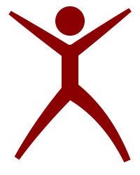

Mark a full class in under a minute.
AttendX is the keyboard-first attendance system for college faculty. Load a roster, mark present or absent with two keys, save and export, whether the network is alive or not.
No setup needed; demo accounts wait on the login page.
From the classroom door to a saved class in four moves.
Every step is built for the moment you have 40 students looking at you.
-
1
Pick the class
Year, section, subject: three selects, remembered from last time.
-
2
Load the roster
Every roll number, in order, on screen before the bell rings.
-
3
Mark as you go
Two keys do the work. The roster keeps pace with your roll call.
-
4
Save & share
One tap: session saved, summary ready as CSV, PDF, or the absentee list on WhatsApp.
Everything a faculty member touches.
…plus Extra Classes, Notifications, Corrections, Analytics, Syllabus Coverage and Settings inside the app.
Built for the way a class actually happens.
Keyboard-first.
P marks present, A marks absent, the arrows move you down the roster. Your hands never leave the home row.
Offline-first.
Every record lives on your machine, or in your own Supabase project when you want sync. A dead network never costs you a class.
Yours to keep.
One-click CSV export and print-to-PDF on every report. What you recorded is yours, in formats that outlive any app.
Ready for your first class?
Open the app, pick a demo account, and mark your first roster.